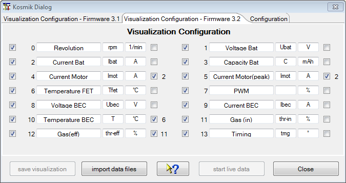
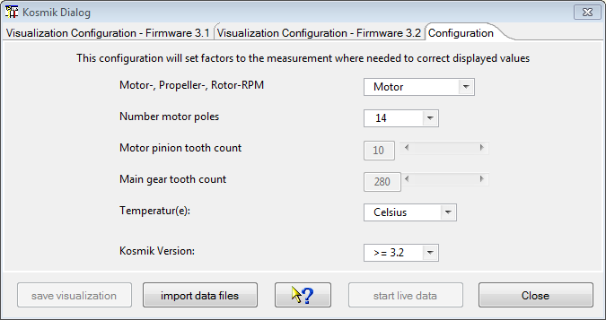
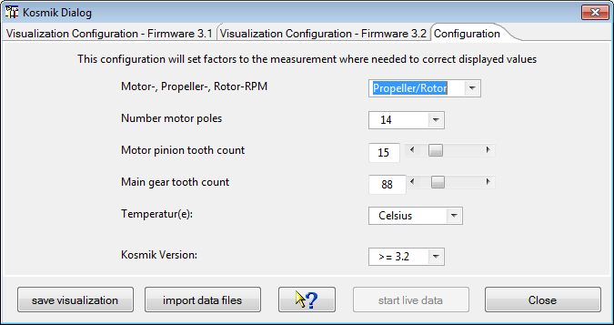

The device dialog should be used to configure the visualization of measurements by selection. Names can be changed as well as symbols and if necessary the unit. Unchecked measurement will not be displayed. Curves without reasonable data doesn't get displayed as well. This will lead to a more clear representation, curves which are hard to be interpreted in two dimensional way, may be blanked out. It is possible to import data files using the 'import data files' button as well.

Hint: The visualization configuration will be applied as well as it is closed in cases where the tool bar button is used to import the data.
At the right hand side of the configuration panel are check boxes which enable a semi automatic scale synchronization. While checking measurement name will be compared to previous once and the fitting measurement ordinal will be added to the measurement configuration entry. Using scale synchronization will reduce the required space for scales and spend more for the graphics. Anyhow, keep in mind that this has influence to the curve a scale visualization and may corrupt this as well. Overlaying curves in this matter will allow direct comparison without using the curve compare window. The visualization is prepared to minimize required changes. Please choose the curve names, in case of scale synchronization, in a way that the names starts with the same word, sample Current synchronized to Current Motor, Current Rx, Current Motor2. This is the algorithm the semi-automatic synchronization is working. Using the DevicePropertiesEditor it is possible to synchronize almost every curve to another by configuration. Sure, this makes only sense for curves where use somehow matching range of values.
Hint: While changing curve names, symbols units or synchronization entries the device configuration file gets changed. With a later version of DataExplorer the device properties schema might change (DeviceProperties_Vxy.xsd), in this case a backup copy of the complete device configurations will be created (Devices_Vxy-1) and your change will remain there. The out dated device configuration file can be used as template to update the new version. If a device configuration file seams to be damaged, just delete it from Devices directory. It will be recreated next time DataExplorer gets started.
Revolution values are given normalized to a two poles motor. To adjust display values it is required to configure a factor using the selected motor poles and/or gear ratio. In cases where other sensors get connected it might be required to adapt a measurement factor or add an offset to adapt sensor capabilities to reality. All this can be done by using the DevicePropertiesEditor.
 
Additionally temperature unit can be adjusted to Fahrenheit instead of Celsius degrees.